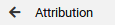
Attribution
This is the command used to attribute value to a variable.
You can use a single expression (attribute a constant or the value of a single variable, or even, the value returned by a function call).
However, you also can use a binary expression (EXP OP EXP) or an expression enclosed by parenthesis ((EXP)).
Bellow is ilustrated the flow to build a binary expression and attribute its result to an integer variable (r).
In this example, the variable r will receive the rest of the integer division of a by b.
- Open the command menu: pass the "mouse" over the icon (bellow indicate), that the menu will be presented
Select the option "attribution".

This will result in a box, indicating the command, that must be positioned (in the code) where you desire the attribution.
- As a result, will be created a graphical command presented in the next figure.
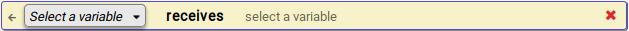
- Define the variable to receive the expression result (left side of the attribution):
First, in the left item, get the option "select a variable".
The will iVProg present all the variable already declared.
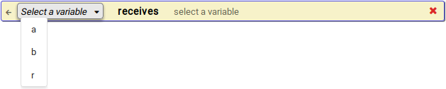
In the example bellow, the variable "r" was selected.

- Define the expression (right side of the attribution):
In the current version of iVProg, expressions are linearly build, to add a new operator/operand, click over the following button
.
If you need parenthesis, click over the next button
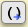
and select its starting and ending point.
See an example to build the expression r <- a % b:
- Select the first item ("Variable a")
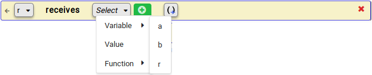
- Add a new operator/operand clicking over the "add operator/operand" button:
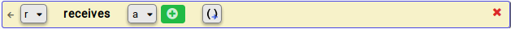
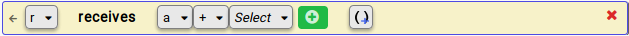
- Select binary operator "remainder of integer division" (%)
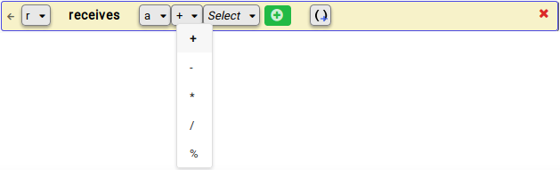
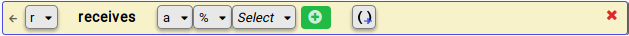
- Select the next operand (variable b)
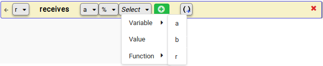
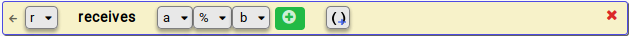
After these steps the attribution command is complete, bellow is presented the iVProg interface with the "main" function,
with integer variables "a", "b" and "r" (respectively initiated with 5, 4, and 0).
In the next command is the result of the above process, the expression
r <- a % b.
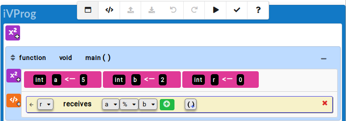
Removing: You can remove any pair "operator/operand", dragging down the "operand", as indicated bellow
(let's suppose was added an extra item, the "+ Select"):
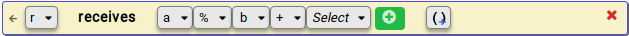
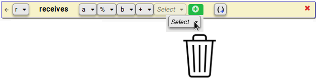
 iVProg :: Quick tutorial
iVProg :: Quick tutorial